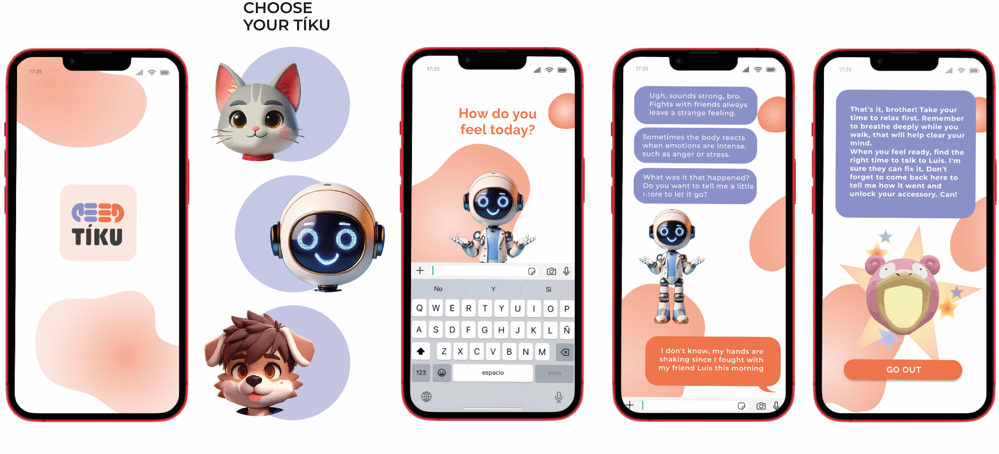
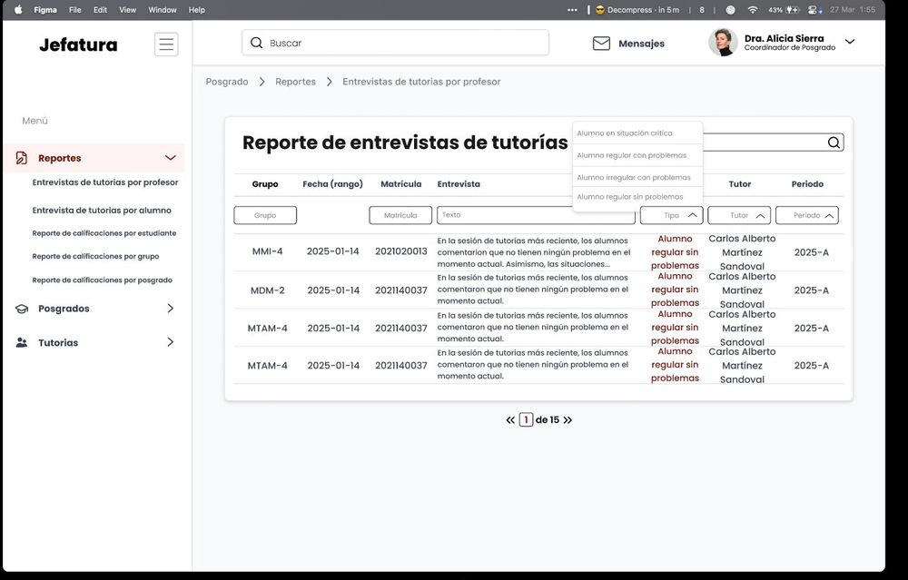
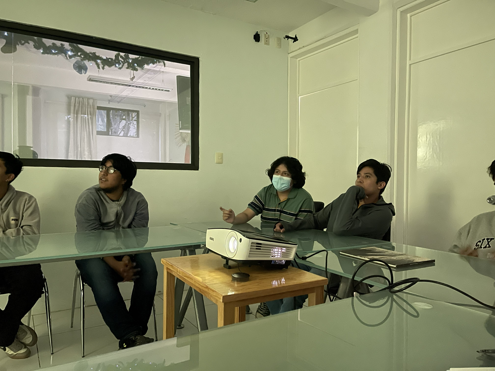

Selected Work

🏆 Finalist · HCI International 2025 · Sweden
Tíku
Emotional technology for rethinking men's role in society. Mobile app + smart wristband designed to help young men in Oaxaca identify and manage emotions safely.
Participatory Design
Co-Design
Usability Testing
Biofeedback

🥇 1st Place · MEXHCI 2023 · Published Research
Lucero
Therapeutic device co-designed with children aged 5–10 to support the grieving process during parental separation.
Co-Design
Child Psychology
Physical Prototype
🏛️ CLIHC 2025 · Master's Thesis
Immersive Study Environments
UCD research with 151 students to design VR/MR environments that support autonomous study and reduce cognitive load.
Mixed Reality
Focus Group
n=151 Survey

In Development
UX/UI Design · 2025 — Present
Postgraduate System
Full UX/UI design for an academic management system at UTM covering tutoring, reports, and student monitoring.
UI Design
Figma
Dashboards

Master's Thesis · 2024–2026
MR Attention Research
Designing and implementing an immersive environment to improve sustained attention in university students using Meta Quest 3.
Unity
Meta Quest 3
Cognitive Load